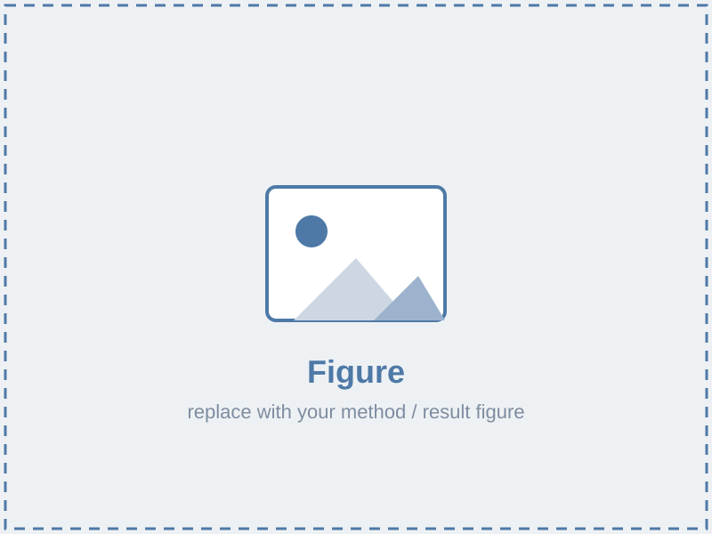

REPLACE — Paper Title
REPLACE — short, catchy one-line description
REPLACE — Conference / Journal Year · (e.g. CVPR 2026)
1 Institution One 2 Institution Two * Equal contribution
REPLACE — one-line teaser caption.
Abstract
REPLACE — Paste your abstract here. Keep it to one paragraph. This is the same copy you would submit to the conference; it sets up the contribution, the method, and the headline result.
Video
Method

REPLACE — figure caption explaining the pipeline.
REPLACE — Describe your approach. Use as many paragraphs and figures as you
need. Copy the <span class="image"> + caption block above to add
more figures.
Results
REPLACE — result 1
REPLACE — result 2
REPLACE — result 3
Team
BibTeX
@article{REPLACE_citekey,
title = {REPLACE — Paper Title},
author = {Last, First and Last, First and Last, First},
journal = {REPLACE — Conference / Journal},
year = {2026}
}Acknowledgements
REPLACE — funding sources and thanks. Template based on the UMI / Diffusion Policy pages (HTML5 UP "Strata").